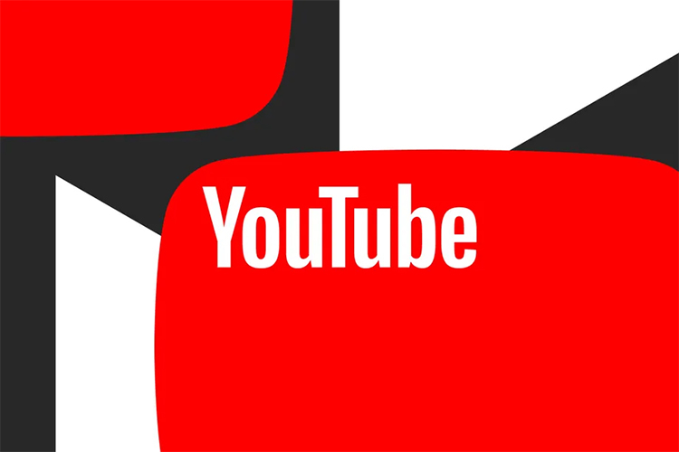

Сегодня в блоге YouTube появилось сообщение, что сервис запускает встраиваемый видеоплеер для образовательных приложений, в котором не будет рекламы, внешних ссылок и рекомендаций. Этот плеер без рекомендательного алгоритма YouTube будет полезен для учителей и учащихся. Алгоритм рекомендаций YouTube уже много лет является предметом пристального внимания и критики из-за того, что он может предоставлять взрослый контент и дезинформацию.

Плеер без рекламы и рекомендаций будет доступен для избранных партнёров, в число которых входят такие образовательные технологические компании, как EDpuzzle, Google Classroom, Purdue University и Purdue Global.
YouTube также объявил о новых инструментах для создателей образовательного контента на платформе, включая возможность взимать плату со зрителей за свои видео. Начиная со следующего года, некоторые авторы смогут создавать бесплатные или платные курсы с плейлистами видео, составленными для аудитории. Если зритель купит курс, он сможет смотреть контент без рекламы и воспроизводить видео в фоновом режиме. Первоначально эти курсы появятся в США и Южной Корее в бета-версии.
И ещё одна новая функция от YouTube — это викторины, которые авторы могут установить на вкладке сообщества на своём канале и которые будут связаны с создаваемым ими образовательным контентом. Компания представит викторины в бета—версии в ближайшие месяцы, а создатели получат доступ к этой функции в следующем году.
В последние годы YouTube ввёл много новых функций, связанных с обучением на платформе, например, фонд в 20 миллионов долларов для создателей образовательных видео и плейлисты без рекомендаций по таким темам, как математика, наука и музыка.